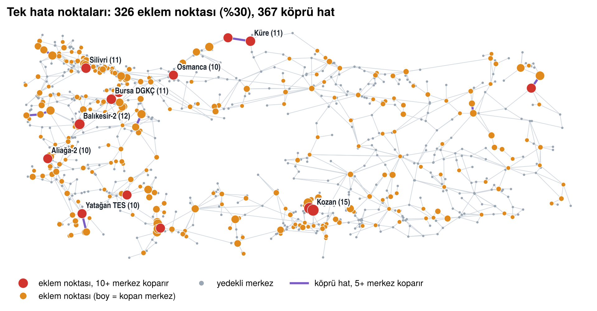
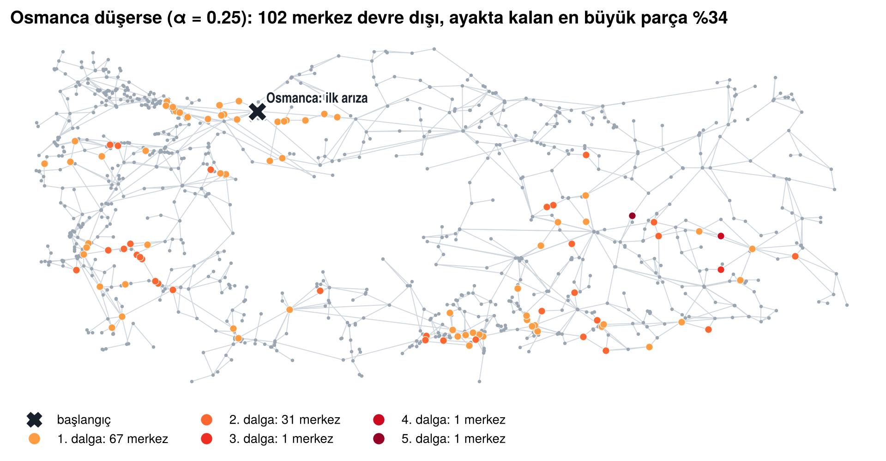
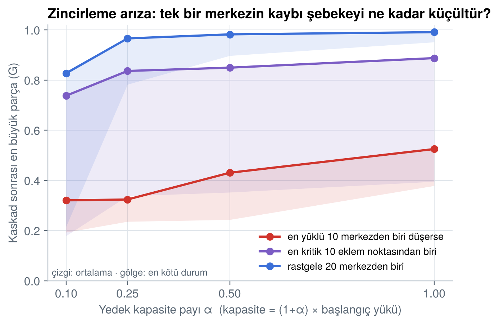
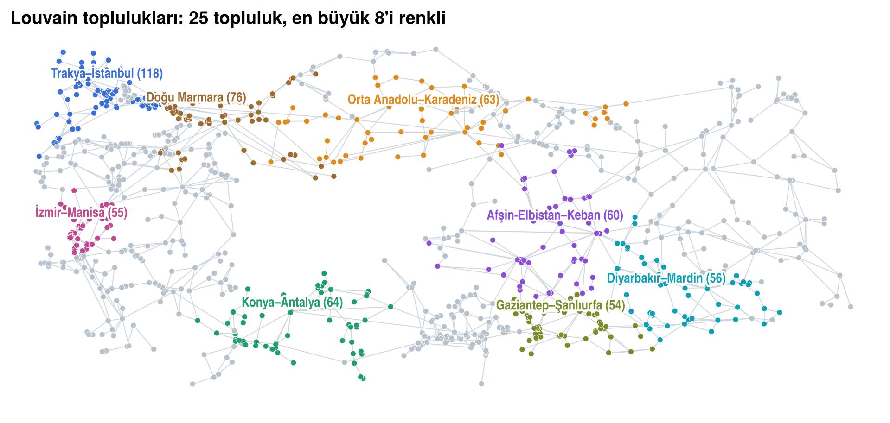

İletim ağında hangi trafo merkezleri tek hata noktası? Basit bir zincirleme arıza nasıl yayılır? OpenStreetMap'ten kurulan 1.193 trafo merkezli ağda eklem noktaları ve yük yeniden dağıtım modeliyle cevap.

Eklem noktası, düştüğünde ağı parçalara ayıran merkezdir. Her biri tek tek kaldırılıp ana şebekeden kopan merkezler sayıldı.
Bu merkezler bölgeyi karanlıkta bırakır ama ülke şebekesini bozmaz. Merkezlerin yalnızca %68'i bir halka üzerindedir; geri kalanlar ağaç gibi dallanan uçlardır.


Model (Motter–Lai, 2002): yük = merkezden geçen en kısa yol sayısı; kapasite = (1+α) × başlangıç yükü. Düşen merkezin yükü kalan ağa dağılır, kapasiteyi aşanlar da düşer. Osmanca düşünce batı–doğu yükü güney koridoruna (Muğla–Antalya–Konya–Adana) kayar; 1. dalgada 67, 2. dalgada 31 merkez düşer ve şebeke bölgesel adalara ayrılır.

Louvain ve Leiden: 25 topluluk, Q = 0,890; iki yöntemin uyumu NMI = 0,92; 10 tohumla kararlılık NMI = 0,90. Hatların %94'ü topluluk içinde kalır.
| Ölçü | Ağ | Rastgele | z |
|---|---|---|---|
| Kümelenme | 0,204 | 0,002 | 142 |
| Ortalama en kısa yol | 12,7 | 6,9 | 91 |
| Modülerlik | 0,890 | 0,716 | 45 |
| Derece benzeşimi | −0,027 | −0,002 | −0,9 |
100 configuration model ağıyla karşılaştırma. Şebeke halkalı ve uzun yolludur, "küçük dünya" değildir. Derece dağılımı üsteldir, kuvvet yasası değildir.
Bölgeyi karanlıkta bırakan merkezler (eklem noktaları) ile ülke geneline yayılan arızayı başlatan merkezler farklıdır. İlki radyal kollardadır, ikincisi Osmanca–Kurşunlu–Kayabaşı 380 kV koridorundadır.